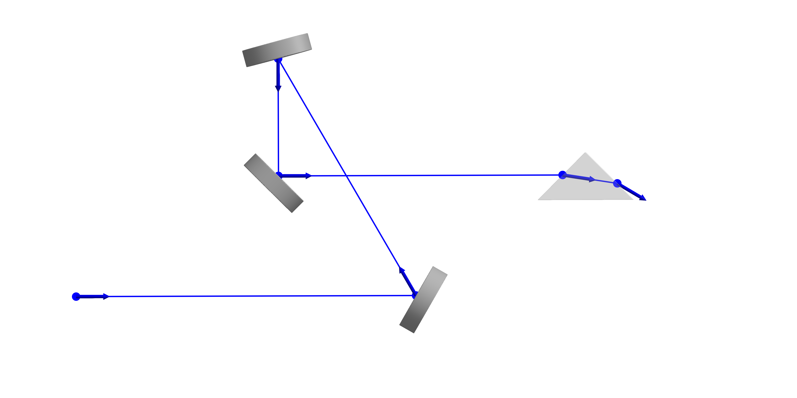

Beams
As mentioned in the Rays section, a beam within the context of this package serves as a data structure for storing collections of rays, forming the backbone of the simulation framework. Beams are intended to be designed as AbstractTrees to allow for ray bifurcations, e.g. in the case of optical elements such as beamsplitters. The solve_system! function relies on this data structure to perform ray tracing computations within optical systems.
To ensure compatibility and extensibility, beam types must adhere to the BeamletOptics.AbstractBeam interface. Refer to its documentation for more information.
Basic beam
A minimal implementation of the BeamletOptics.AbstractBeam type is provided by the Beam. It can be used to store a light path through an optical system. If the beam is split, its children will be recursively traced until all paths are solved.
BeamletOptics.Beam — Type
Beam{T, R <: AbstractRay{T}} <: AbstractBeam{T, R}Stores the rays that are calculated from geometric optics when propagating through an optical system. The Beam type is parametrically defined by the AbstractRay subtype that it stores.
Fields
rays: vector ofAbstractRayobjects, representing the rays that make up the beamparent: reference to the parent beam, if any (Nullableto account for the root beam which has no parent)children: vector of child beams, each child beam represents a branching or bifurcation of the original beam, i.e. beam-splitting
A ray tracing example through an arbitrary system using a Beam is shown below. Individual Ray segments are marked by their starting position and direction. The Beam expander and Miniature microscope tutorial covers the use of the Beam in more detail.
